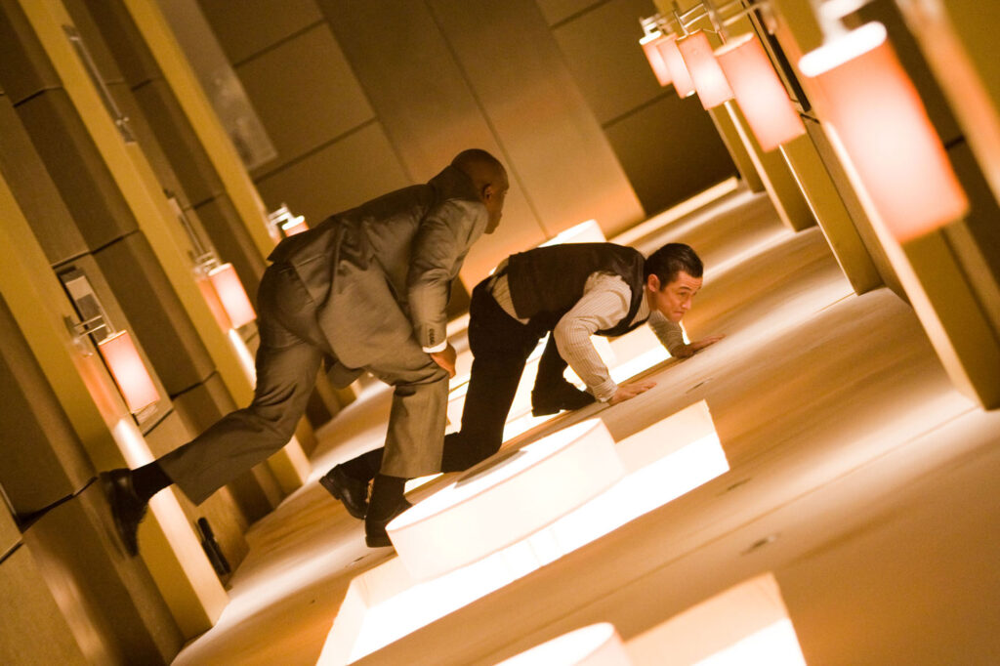

Pensare come un regista: Le basi del linguaggio (Forma e Stile)
I film fanno parte della nostra vita quotidiana: li vediamo ovunque, dal grande schermo del cinema fino allo schermo piccolo del telefono. Non servono solo a intrattenerci: trasmettono idee, emozioni e modi di vedere il mondo che spesso non sperimenteremmo mai da soli. Un film non nasce per caso: è progettato con cura per farci provare emozioni particolari, come paura, tensione, gioia o tristezza. Per capire il cinema come arte, bisogna sempre chiedersi come e perché il film è fatto in un certo modo.
Pensare come un regista significa rendersi conto che ogni scelta che vediamo sullo schermo è stata presa deliberatamente da qualcuno. Il regista decide continuamente: dove posizionare la macchina da presa, come illuminare una scena, cosa mostrare allo spettatore e quando tagliare. È lo stesso processo che facciamo tutti quando scattiamo una foto — scegliamo l'angolo, inquadriamo il soggetto — ma su scala molto più grande e con conseguenze molto più importanti.
Per capire davvero il cinema, dobbiamo conoscere i due pilastri del suo linguaggio: Forma e Stile. La Forma è la struttura del film, ovvero come tutte le parti (scene, personaggi, trama) lavorano insieme per creare un effetto: è il "modo in cui è costruito". Lo Stile, invece, è l'uso pratico dei mezzi tecnici del cinema, che si divide in quattro categorie: messa in scena (tutto ciò che c'è davanti alla camera: attori, luci, scenografie, costumi), cinematografia (come viene ripresa l'immagine), montaggio (come le inquadrature vengono unite insieme) e suono (musiche, dialoghi, rumori). Un esempio perfetto di come forma e stile lavorino insieme è Inception: la narrazione a livelli multipli di sogni è la forma, mentre il corridoio rotante è uno straordinario esempio di stile visivo.
